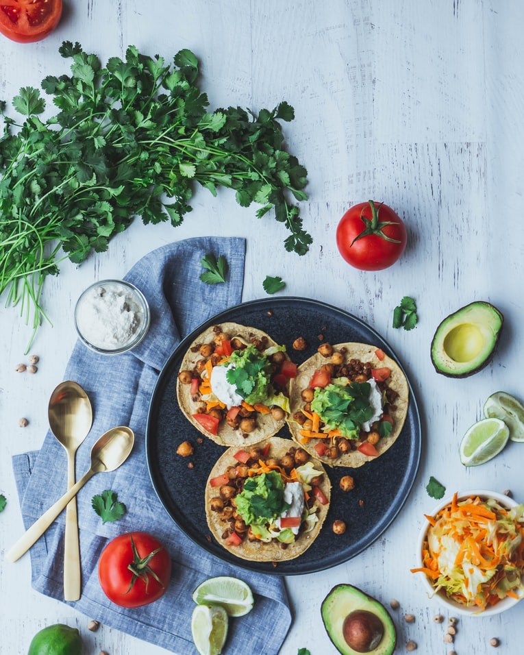

Jackfruit Tacos

Description
First Paragraph
Second Paragraph
Ingredients
4 taco shells
2 cans of Jackfruit
2 tablespoons vegetable Oil
2 tablespoons taco seasoning
1 sliced Jalapeno
1/2 cup of salsa
1/2 cup of vegan cheese